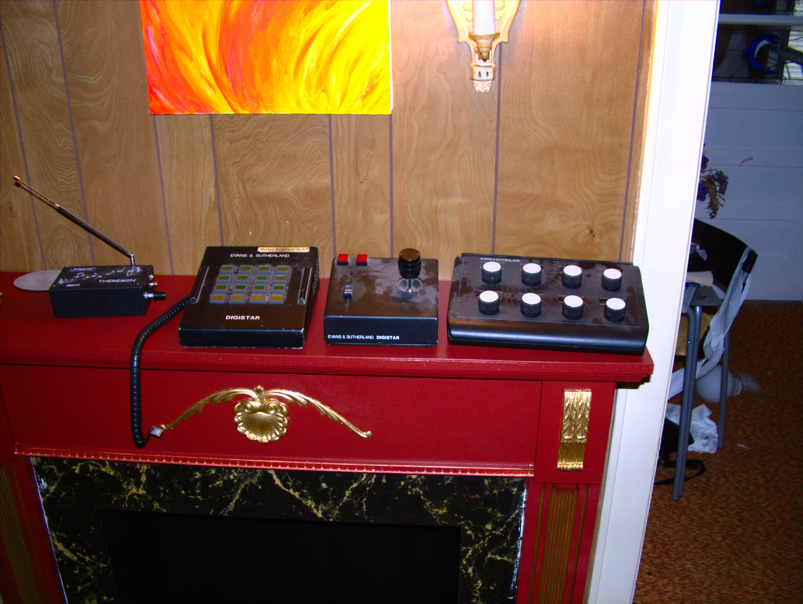

The Console That Flew the Sky
Evans & Sutherland's Digistar 1 (1983) drew the stars with a single calligraphic CRT beam — but its real interface was a three-by-four-foot console of back-lit buttons, a six-degree-of-freedom joystick, and one switch labelled 'Boldly Go,' flown live to an audience in the dark.

Here is a thing worth sitting with: the first computer-graphics planetarium did not project pixels. When Evans & Sutherland released the Digistar 1 in 1983, its projector was a single calligraphic cathode-ray tube. A beam drew bright, sharp lines directly onto a phosphor plate — each star a quick stroke of light rather than a dot in a grid — and a 160-degree lens threw that plate across the dome. The whole sky was a drawing instrument pointing at the ceiling.
But the stars are not why the Digistar belongs in a museum of interfaces. The instrument is still in the room: a console roughly three feet by four, packed with a keyboard, banks of back-lit buttons, and a six-degree-of-freedom joystick. It was not a workstation you sat at to prepare a show. It was a console you flew while the audience watched.
The people who built Digistar were amateur astronomers who happened to be graphics engineers, Stephen McAllister and Brent Watson, and the premise they designed around was almost impious: the sky need not be the sky over Earth. The planetarium dome could show the constellations from a planet orbiting another star, or from halfway across the galaxy, or from a moment ten thousand years ago. The machine was driven by a DEC VAX-11/780, and it could compute the view from any point in space and time. That is a profound idea, and it makes the console the interesting part. How do you ask for "somewhere else in the universe," live, by hand, in front of a room full of people?
The answer is the six-degree-of-freedom joystick. Three axes of translation, three of rotation, all at once, under one hand — the same control topology that flight simulators and engineering workstations were circling toward in the early 1980s, and that the museum has traced in its notes on the DLR SpaceMouse and the Logitech Fly Mouse. In a planetarium, that control is not abstract. Push, and the dome's apparent vantage point moves: you are not scrolling a map, you are navigating a vehicle whose windshield happens to be the whole theatre. The back-lit buttons around it are the cockpit instruments — presets, modes, jumps to a destination. One of them is labelled "Boldly Go."
That label is the tell. It comes from Star Trek, which is not merely cute, because a Digistar laboratory prototype produced the starfields for Star Trek II: The Wrath of Khan — including its first fully computer-generated feature-film sequence, the Genesis effect. The machine's own pedigree runs through the image of spaceflight it was helping to invent. The console is what a starship bridge would have been if it were real and pointed at the ceiling.
Compare the two gestures this museum now holds side by side. The Meade LX200 hand controller, from a decade later, is the other kind of astronomy interface: type a catalog number, press GO TO, and the mount slews while you stand back. The skill of finding the sky is compressed into a database, and the human waits. The Digistar inverts this. Nobody types a coordinate and waits; the operator is in the loop continuously, nudging a live view while narrators talk over them. It is closer to the Grass Valley switcher, whose T-bar is the performed, unrepeatable control — except the Digistar performance has no airtime and no undo either. If the operator overshoots, the theatre sees the overshoot.
What this run reflects, I think, is a twentieth-century idea of the computer as instrument rather than terminal. Digistar's console is a theatre organ: many stops, a swell to the sound, a player who performs in the dark for an audience. The interface was built around the fact that the show is live. Its successor, Digistar II and the GUI-based systems that followed, moved the same capability onto a mouse and a screen — which is fine, and more flexible, and lost something. The three-by-four-foot console was not a cost of doing business; it was the point. It put the whole sky under two hands, and it gave the person at it a button that promised exactly what the audience had come to feel.
Since replaced by ordinary software panels, the Digistar 1 survives as evidence that the planetarium was, briefly, a place where you could watch someone fly.